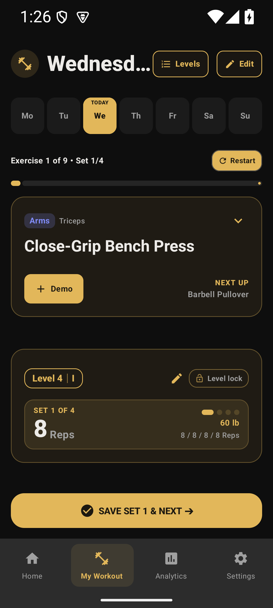
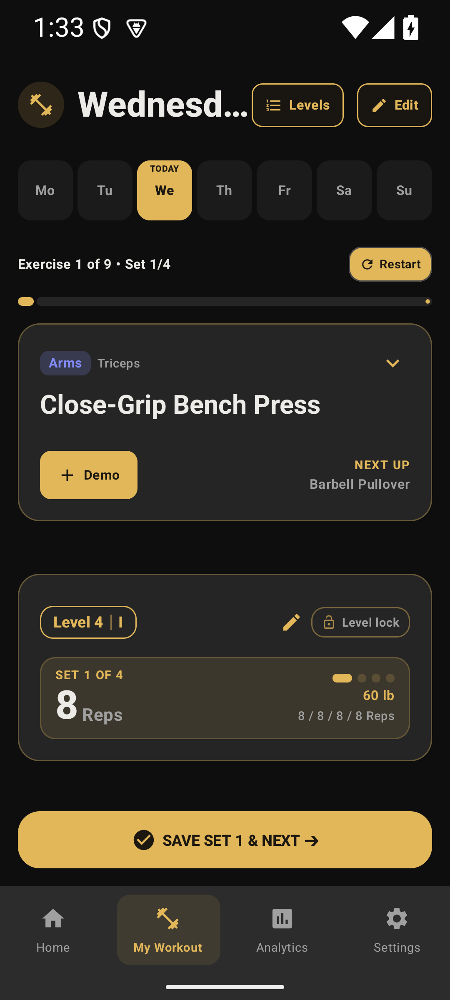
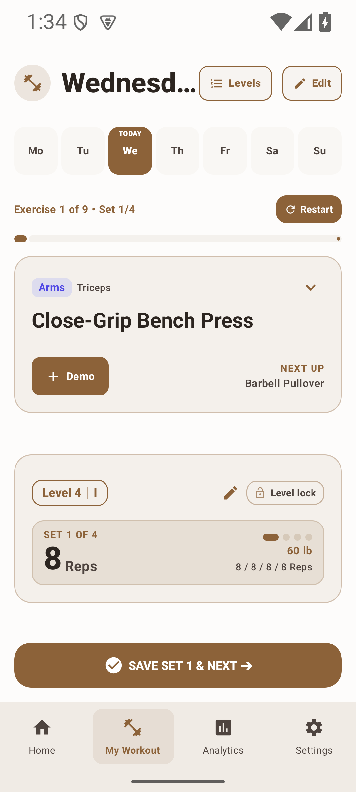

SUPERSEDED the same day — the
#252525 this page calls "the change" was still too light, and it left the bottom
bar and the general cards three times lighter again. What actually ships is
#191919 for the general cards and #1E1E1E for the hero cards and the
bar; see the later, measured page. The frames
below are kept as the record of that intermediate step.
Same tab, same theme, same build path. Left: the two hero cards painted with an 8% primary tint
(#1F1B14, 25.6% of the frame).
Middle: the change — the cards take the scheme's own grey
(#252525), which is what every other
card in the app already wears on a dark theme, and the accent keeps the rims, the writing, the level
pill and the buttons. Right: the light scheme, untouched, still the beige card he asked to keep
(#F4F0EB).

#1F1B14: 8% of gold over the near-black canvas. Also the
per-set banner #362E1D inside the lower card.
#252525 — #1F1B14 is gone from the frame entirely.
Banner #3C372C, action button and all writing still gold.
Captured with adb exec-out screencap on emulator-5554 (1080×2400),
colour shares sampled from the PNGs rather than eyeballed. Full reasoning and the test that pins it are
in workoutCardFill and DarkThemeContrastTest.